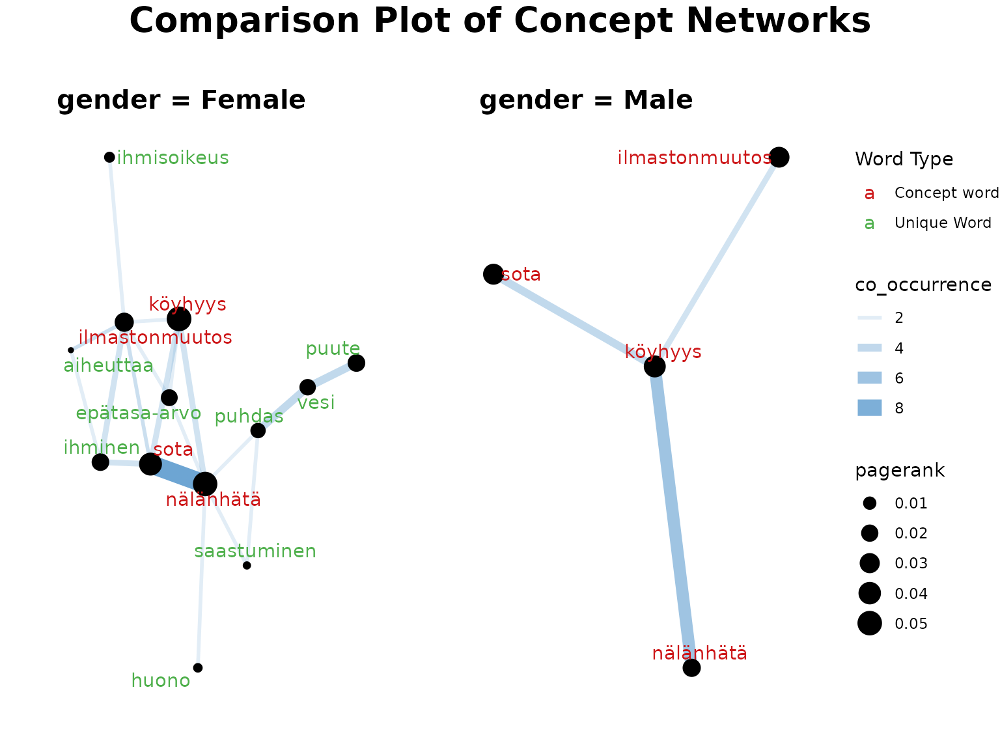

InDetail4-ComparisonFunctions
Source:vignettes/web_only/InDetail4-ComparisonFunctions.Rmd
InDetail4-ComparisonFunctions.RmdIntroduction
When analysing responses to open-ended questions, you may want to
look into whether different groups of survey participants have, in
general, responded differently to the prompt.
finnsurveytext contains a number of comparison functions
which are intended to be used to compare responses between groups. These
comparison functions covered are defined in
r/04_comparison_functions.R and
r/05_comparison_concept_network.R.
One way to split the data is using a different question within the
survey such as a categorical question (eg. gender, location, or level of
education) or an ordinal variable (such as age or income bracket). In
this tutorial, we will look at comparing responses to a question based
on gender. Before using the comparison functions, we run the preparation
functions which are in r/01_prepare_conll-u.R (and which
are covered in detail in ‘Tutorial1-Prepare CoNLL-U’) for each group
separately.
The comparison functions are:
fst_summarise_compare()fst_pos_compare()fst_length_compare()fst_comparisoncloud()fst_get_unique_ngrams()fst_join_unique()fst_ngrams_compare_plot()fst_ngrams_compare_plot2()fst_plot_multiple()fst_freq_compare()fst_ngrams_compare()fst_cn_get_unique()fst_cn_compare_plot()fst_concept_network_compare()
We will look at the following question:
- q11_2 Jatka lausetta: Kehitysyhteistyö on toimintaa, jossa…
(Avokysymys)
- (In English) q11_2 Continue the sentence: Development cooperation is an activity in which… (Open question)
Comparison of responses based on gender
All of our comparison functions can compare between groups of respondents based on another field in the raw data which we have included when formatting. The following common arguments appear in multiple functions and are defined the same way in each:
-
fieldis the field in the data used to split the responses. -
exclude_nulls(which has a default value of FALSE) is used to indicate whether we want to include a group of repondents which have no value in thefieldcolumn. -
rename_nulls(with default value of ‘null_data’) is what to name the group with the missingfielddata.
First, we will look at some summary functions to compare the responses overall.
The functions are:
fst_summarise_compare()fst_pos_summary()fst_length_compare()
Make Comparison Summary
We can run this function to create a summary table for our data: (we
use knitr::kable function below to display results in a
“prettier” table)
knitr::kable(
fst_summarise_compare(data = df2,
field = 'gender',
exclude_nulls = FALSE,
rename_nulls = 'no gender provided'
)
)| Description | Respondents | No Response | Proportion | Total Words | Unique Words | Unique Lemmas |
|---|---|---|---|---|---|---|
| Female | 673 | 13 | 0.98 | 2993 | 823 | 722 |
| Male | 183 | 8 | 0.96 | 795 | 383 | 354 |
| no gender provided | 89 | 4 | 0.96 | 404 | 225 | 208 |
Remarks:
We can already see that our data is quite unbalanced. There are a lot more female respondents than male or unspecified. The response (to this question) rate is high (97%) but slightly lower for the unspecified respondents. Unsurprisingly, since there are more female responses, the female responses to this question contain a larger variety of words.
POS and Length Comparisons
Next, we will look at part-of-speech tags and lengths of responses.
knitr::kable(
fst_pos_compare(data = df2,
field = 'gender',
exclude_nulls = TRUE
)
)| UPOS | Part_of_Speech_Name | Female-Count | Female-Prop | Male-Count | Male-Prop |
|---|---|---|---|---|---|
| ADJ | adjective | 276 | 0.092 | 69 | 0.087 |
| ADP | adposition | 19 | 0.006 | 3 | 0.004 |
| ADV | adverb | 44 | 0.015 | 11 | 0.014 |
| AUX | auxiliary | NA | NA | 3 | 0.004 |
| CCONJ | coordinating conjunction | 2 | 0.001 | NA | NA |
| DET | determiner | 24 | 0.008 | 4 | 0.005 |
| INTJ | interjection | 1 | 0.000 | NA | NA |
| NOUN | noun | 2373 | 0.793 | 636 | 0.800 |
| NUM | numeral | 1 | 0.000 | 1 | 0.001 |
| PART | particle | 18 | 0.006 | 8 | 0.010 |
| PRON | pronoun | 8 | 0.003 | 3 | 0.004 |
| PROPN | proper noun | 19 | 0.006 | 12 | 0.015 |
| PUNCT | punctuation | NA | NA | NA | NA |
| SCONJ | subordinating conjunction | NA | NA | NA | NA |
| SYM | symbol | 1 | 0.000 | NA | NA |
| VERB | verb | 195 | 0.065 | 45 | 0.057 |
| X | other | 12 | 0.004 | NA | NA |
knitr::kable(
fst_length_compare(data = df2,
field = 'gender',
incl_sentences = TRUE,
exclude_nulls = TRUE
)
)| Description | Respondents | Mean | Minimum | Q1 | Median | Q3 | Maximum |
|---|---|---|---|---|---|---|---|
| Female- Words | 660 | 5.518 | 1 | 4 | 5 | 6 | 28 |
| Female- Sentences | 660 | 1.012 | 1 | 1 | 1 | 1 | 3 |
| Male- Words | 175 | 5.417 | 2 | 4 | 5 | 6 | 32 |
| Male- Sentences | 175 | 1.029 | 1 | 1 | 1 | 1 | 3 |
Remarks:
In terms of POS tags, the scale differences are likely mostly due to the differences in the number of respondents between genders. We can also see that female responses are generally slightly longer (average of 6 words to 5 words) but that most respondents (across the genders) wrote only a single sentence.
Comparison Cloud
Now that we’ve looked at the overview comparisons, we will create a comparison cloud between the responses, using the versions with stopwords removed so that only more meaningful words remain.
A comparison cloud compares the relative frequency with which a term is used in two or more documents. This cloud shows words that occur more regularly in responses from a specific type of respondent. For more information about comparison clouds, you can read this documentation.
We create our comparison cloud as follows:
# WEIGHTED
fst_comparison_cloud(data = df2,
field = 'gender',
pos_filter = NULL,
norm = NULL,
max = 100,
use_svydesign_weights = FALSE,
use_svydesign_field = FALSE,
id = "",
svydesign = NULL,
use_column_weights = TRUE,
exclude_nulls = TRUE
)To run fst_comparison_cloud(), we provide the following
arguments to the function:
-
data,field,exclude_nullsand `rename_nulls`` (as defined above) -
normis the method for normalising the data. Valid settings are'number_words'(the number of words in the responses),'number_resp'(the number of responses), orNULL(raw count returned, default). -
pos_filteris an optional list of which POS tags to include such as'c("NOUN", "VERB", "ADJ", "ADV")'. The default isNULL, in which case all words in the data are considered. -
maxis the maximum number of words to display, the default is100. -
use_svydesign_weightsis a boolean for whether to get weights for the responses from asvydesignobject - If weights are coming from a
svydesignobject, theidfield needs to not be empty, as this is used to join the data. - Similarly, if weights are coming from a
svydesignobject this is the named object. -
use_column_weightsis a boolean for if weights have already been included in the formatted data and should be included.
Common Words and N-grams
Now, we will look at common words occurring in the responses.
First, we will consider all the responses for this question. We are
not filtering the data based on POS tag, and will leave the default of
strict = TRUE which will cut-off the list at 10 words (see
the warning note about this). We also use the default for the norm which
means we are standardising between groups by dividing count of a word by
the total number of words in the responses.
For definition of fst_freq_table() and
fst_ngrams_table() functions, see
“InDetail2-DataExploration”.
all_top10 <- fst_freq_table(df2,
number = 10,
norm = "number_words",
pos_filter = NULL,
strict = FALSE
)
#> Note:
#> Words with equal occurrence are presented in alphabetical order.
#> With `strict` = FALSE, words occurring equally often as the `number` cutoff word will be displayed.
all_top10bigrams <- fst_ngrams_table(df2,
number = 10,
ngrams = 2,
norm = "number_words",
pos_filter = NULL,
strict = TRUE
)
#> Note:
#> N-grams with equal occurrence are presented in alphabetical order.
#> By default, n-grams are presented in order to the `number` cutoff n-gram.
#> This means that equally-occurring later-alphabetically n-grams beyond the cutoff n-gram will not be displayed.
knitr::kable(all_top10)| words | occurrence |
|---|---|
| köyhyys | 0.062 |
| nälänhätä | 0.057 |
| sota | 0.055 |
| ilmastonmuutos | 0.034 |
| puute | 0.028 |
| ihminen | 0.025 |
| vesi | 0.023 |
| epätasa-arvo | 0.021 |
| ahneus | 0.020 |
| nälkä | 0.019 |
knitr::kable(all_top10bigrams)| words | occurrence |
|---|---|
| puhdas vesi | 0.015 |
| vesi puute | 0.013 |
| nälänhätä sota | 0.010 |
| köyhyys nälänhätä | 0.009 |
| sota nälänhätä | 0.008 |
| epätasainen jakautuminen | 0.007 |
| sota köyhyys | 0.007 |
| köyhyys sota | 0.005 |
| nälänhätä köyhyys | 0.005 |
| ilmastonmuutos köyhyys | 0.004 |
Comparison N-Gram Plots
Now we will look at top words by gender. There are two functions
which create the plots in one function simply. These are
fst_freq_compare() and
fst_ngrams_compare().
fst_freq_compare(
df2,
field = 'gender',
number = 10,
norm = NULL,
pos_filter = NULL,
unique_colour = "indianred",
strict = TRUE,
exclude_nulls = TRUE,
use_column_weights = TRUE
)
fst_ngrams_compare(
df2,
field = 'gender',
number = 10,
ngrams = 2,
norm = NULL,
pos_filter = NULL,
unique_colour = "indianred",
strict = TRUE,
use_column_weights = TRUE,
exclude_nulls = TRUE
)
The functions fst_freq_compare() and
fst_ngrams_compare() have parameters as defined
previously.
Remarks: Note that words that are unique to a gender are highlighted in red. This is only comparing the top 10 words, so be aware this word likely still appears in the other genders, just less frequently! Interestingly, while they have the same top 4 words, it seems that the top 3 words differs across the genders with ‘ilmastonmuutos’ being the 3rd most frequent in male responses but ‘nälänhätä’ is in the top 3 for females. The most frequent bigram in female responses ‘puhdas vesi’ is not commonly mentioned by male respondents.
Comparison Concept Network
Since the top 4 words are ‘köyhyys’, ‘nälänhätä’, ‘sota’, and ‘ilmastonmuutos’, we will create Concept Networks based on these terms.
We run the comparison Concept Network as below. Again, we’re keeping the default norm.
fst_concept_network_compare(data = df2,
concepts = 'köyhyys, nälänhätä, sota, ilmastonmuutos',
field = 'gender',
norm = NULL,
threshold = NULL,
pos_filter = NULL,
exclude_nulls = TRUE,
)
The parameters are the same as previously described.
Remarks:
Each of these Concept Networks are created separately, which means that the weights of words are based only on the responses within that gender. Despite this, we have many more words in the female plot (possibly due to there being more responses in this data leading to increased variation).
Conclusion
As demonstrated in this tutorial, finnsurveytext
contains a number of functions which can be used to compare responses
between groups. This analysis could form the start of further work into
the responses to question 11_3 by respondents based on their gender, or
as just one of many different splits used to investigate the
responses.
Citation
Finnish Children and Youth Foundation: Young People’s Views on Development Cooperation 2012 [dataset]. Version 2.0 (2019-01-22). Finnish Social Science Data Archive [distributor]. http://urn.fi/urn:nbn:fi:fsd:T-FSD2821